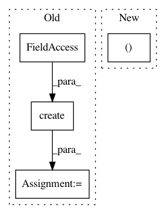

008ce42cb55e529319f53abeb00fc6cf3918f548,src/python/pants/pantsd/service/scheduler_service.py,SchedulerService,prefork,#SchedulerService#Any#Any#,162
Before Change
session = self._graph_helper.new_session()
with self.fork_lock:
global_options = options.for_global_scope()
target_roots = TargetRootsCalculator.create(
options=options,
session=session.scheduler_session,
symbol_table=session.symbol_table,
exclude_patterns=tuple(global_options.exclude_target_regexp) if global_options.exclude_target_regexp else tuple(),
tags=tuple(global_options.tag) if global_options.tag else tuple()
)
if global_options.v1:
session.warm_product_graph(target_roots)
After Change
if options.for_global_scope().loop:
return session, self._prefork_loop(session, options)
else:
return session, self._prefork_body(session, options)
def _prefork_loop(self, session, options):
// TODO: See https://github.com/pantsbuild/pants/issues/6288 regarding Ctrl+C handling.
In pattern: SUPERPATTERN
Frequency: 4
Non-data size: 4
Instances
Project Name: pantsbuild/pants
Commit Name: 008ce42cb55e529319f53abeb00fc6cf3918f548
Time: 2018-08-06
Author: stuhood@twitter.com
File Name: src/python/pants/pantsd/service/scheduler_service.py
Class Name: SchedulerService
Method Name: prefork
Project Name: HyperGAN/HyperGAN
Commit Name: ad0437cbe8b274d5268914718cf036efe5f4b772
Time: 2017-02-13
Author: mikkel@255bits.com
File Name: hypergan/graph/graph.py
Class Name: Graph
Method Name: create_z_encoding
Project Name: HyperGAN/HyperGAN
Commit Name: 5a949f8810dbc838c5827928bdcd83f65876a955
Time: 2017-02-13
Author: mikkel@255bits.com
File Name: hypergan/graph/graph.py
Class Name: Graph
Method Name: create_z_encoding
Project Name: SpiNNakerManchester/sPyNNaker
Commit Name: 99fb650dee4598e3bd61da14b6e03f940f34e018
Time: 2018-01-16
Author: donal.k.fellows@manchester.ac.uk
File Name: spynnaker/pyNN/connections/spynnaker_poisson_control_connection.py
Class Name: SpynnakerPoissonControlConnection
Method Name: set_rates